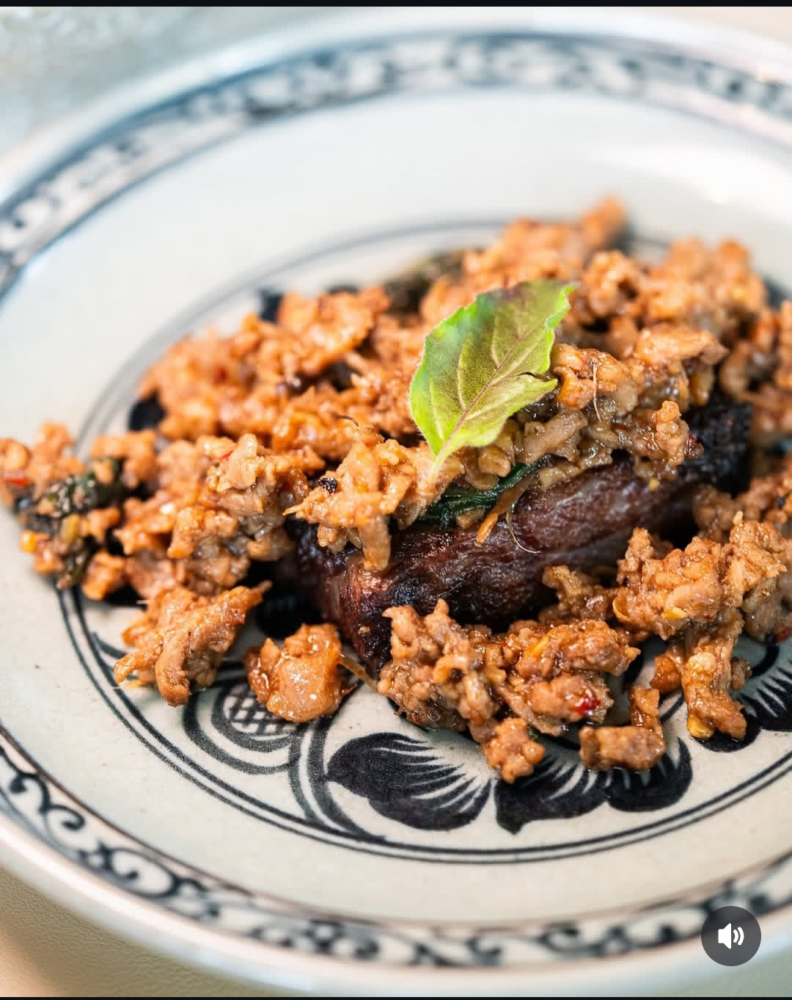
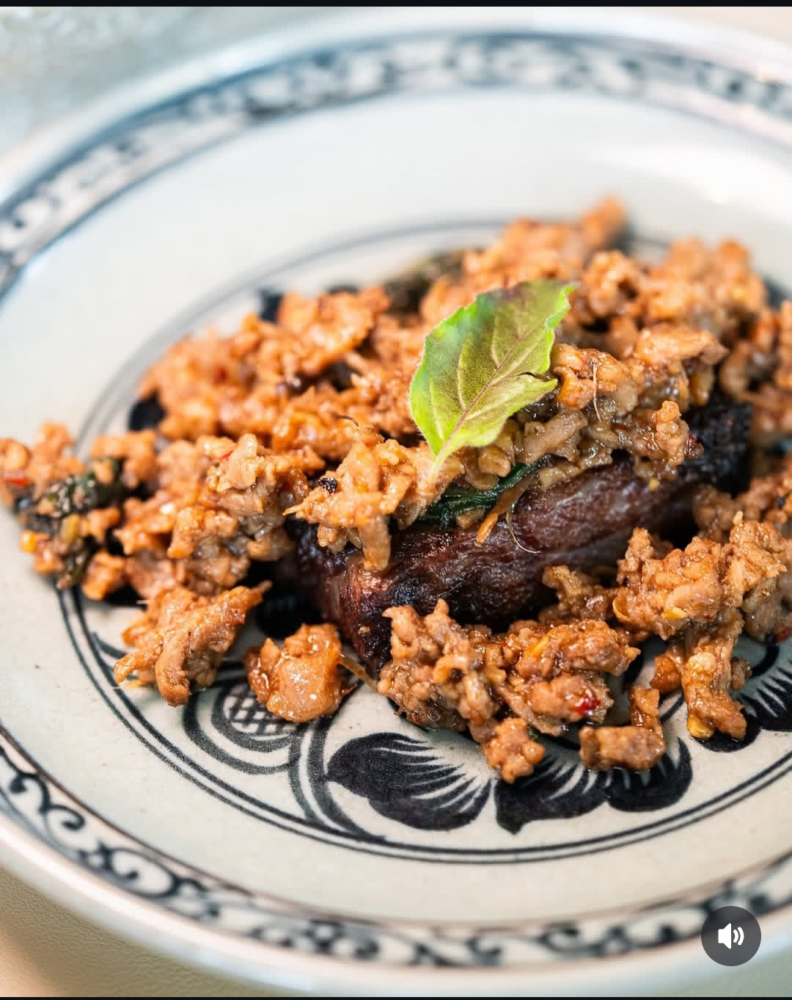

Bangkok et Restaurants
Bangkok est une ville où la gastronomie occupe une place centrale, offrant une richesse culinaire qui séduit les locaux comme les visiteurs. Ses restaurants, allant des échoppes de rue aux établissements haut de gamme, proposent une cuisine authentique et savoureuse. Les plats emblématiques comme le Pad Thaï, le Tom Yum, et le Curry vert témoignent du savoir-faire des chefs qui maîtrisent l'équilibre parfait entre épices, herbes fraîches et ingrédients locaux. Que ce soit sur un marché animé ou dans un restaurant élegant surplombant la ville, chaque repas à Bangkok est une véritable immersion dans une tradition culinaire vibrante et raffinée.
Nos meilleurs restaurants
Nasara Restaurant
Mini galerie
 

Statistiques
| Période | Nombre de restaurants |
|---|---|
| 1995 | 1800 |
| 2000 | 2200 |
| 2005 | 2800 |
| 2010 | 3400 |
| 2015 | 4100 |
| 2020 | 4700 |
| 2024 | 5000 |